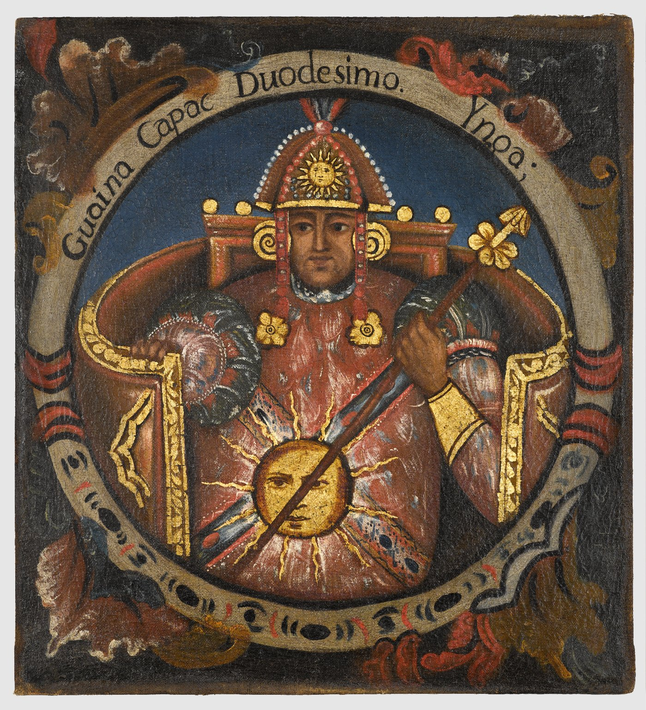

Huayna Cápac: El último gran emperador del Tahuantinsuyo
Huayna Cápac fue el undécimo Sapa Inca y uno de los gobernantes más importantes del Imperio del Tahuantinsuyo. Su nombre en quechua significa “el joven poderoso” o “el joven magnífico”, lo cual refleja tanto su herencia imperial como su rol clave en la historia de los incas. Su gobierno marcó el punto máximo de expansión territorial, desarrollo administrativo y esplendor político del Imperio Incaico. Nació alrededor de 1464 en el Cusco, aunque algunos cronistas señalan que habría nacido en Tumibamba (actual Cuenca, Ecuador), una ciudad importante al norte del imperio, donde su padre Túpac Yupanqui había consolidado su poder. Era hijo legítimo del emperador Túpac Yupanqui y de Mama Ocllo, una ñusta (princesa) de linaje real. Desde joven fue instruido en el arte de la guerra, la religión, la política, la astronomía, la administración y el idioma quechua.
Cuando Túpac Yupanqui murió hacia 1493, Huayna Cápac fue designado como su sucesor legítimo. Ascendió al trono incaico siendo aún joven, y se rodeó de consejeros experimentados, militares leales y sacerdotes sabios para continuar con la expansión y consolidación del imperio. Desde el inicio de su gobierno, Huayna Cápac enfrentó numerosos desafíos. Uno de los principales fue mantener el control sobre las zonas recientemente incorporadas por su padre, especialmente los territorios del actual Ecuador, donde la resistencia local aún era fuerte. Para ello, trasladó la corte incaica por un tiempo a la ciudad de Tumibamba, lo que convirtió al norte del imperio en un nuevo centro político-administrativo.
Durante su reinado, el Tahuantinsuyo alcanzó su máxima extensión territorial, abarcando partes de lo que hoy son Colombia, Ecuador, Perú, Bolivia, Chile y Argentina. Consolidó el dominio sobre los pueblos quitus, cañaris, caranquis y otras etnias del norte andino. También fundó nuevos centros administrativos y militares para asegurar el control estatal y promover la cultura incaica en regiones distantes. Uno de los grandes méritos de Huayna Cápac fue fortalecer el centralismo del Estado Inca. Reorganizó las funciones estatales, mejoró los registros mediante los quipus, amplió la red de caminos (Qhapaq Ñan) y reforzó el sistema de mitmaqkuna, trasladando poblaciones enteras para fomentar la lealtad al imperio y diluir focos de resistencia.
Además, promovió la construcción de nuevas fortalezas, templos y tambos en las rutas principales. Fortificó lugares estratégicos y elevó la importancia de ciudades como Quito, Cajamarca y Tumibamba, lo que ayudó a descentralizar parcialmente la administración sin debilitar el poder imperial. En el aspecto religioso, continuó con la política de sus antecesores: intensificó el culto al Sol (Inti), reafirmó su posición como hijo del dios solar y promovió festividades religiosas que unían a todo el imperio en torno a una cosmovisión compartida. También mantuvo el respeto por las huacas locales y permitió la fusión del panteón inca con deidades regionales.
En términos militares, Huayna Cápac demostró ser un estratega firme y pragmático. Reprimió rebeliones en el norte, pero también supo aplicar la diplomacia y el intercambio para lograr la sumisión pacífica de ciertos grupos. Una de las campañas más notables fue contra los pueblos pastos y caranquis en el norte de Ecuador y sur de Colombia, quienes ofrecieron resistencia prolongada. Aunque logró someterlos, fue una victoria costosa y parcial. La importancia política y simbólica de Tumibamba creció tanto que Huayna Cápac pasó gran parte de sus últimos años de vida allí, lejos del Cusco. Esto trajo consecuencias negativas: el distanciamiento del centro imperial favoreció tensiones internas en la nobleza cusqueña, especialmente entre sus hijos.Tuvo varios hijos, tanto legítimos como ilegítimos. Los más conocidos fueron Huáscar, nacido en Cusco, y Atahualpa, nacido en el norte, probablemente en Quito o Tumibamba. Ambos fueron criados en contextos distintos, y esto tendría graves consecuencias tras la muerte del emperador. Hacia 1525, cuando Huayna Cápac se encontraba en el norte del imperio, estalló una epidemia, probablemente de viruela, traída por los europeos que ya habían llegado a América y estaban avanzando por Centroamérica y el Caribe. Esta enfermedad, desconocida para los pueblos andinos, fue devastadora. Afectó tanto a la población general como a la élite gobernante.
Huayna Cápac enfermó gravemente y murió en la ciudad de Quito o en sus alrededores, a causa de esta epidemia. Su muerte no solo marcó el fin de una era, sino que también dejó un vacío de poder y una sucesión no resuelta que llevó al estallido de una guerra civil entre sus hijos Huáscar y Atahualpa. Antes de morir, habría designado como sucesor a Ninan Cuyuchi, otro de sus hijos, pero este también murió por la misma epidemia. Esta situación crítica derivó en el conflicto entre Huáscar y Atahualpa, que dividió al imperio justo en el momento en que los españoles, liderados por Francisco Pizarro, comenzaban su avance por el sur andino.
Resumen en pequeña lista: Huayna Cápac
- Nombre quechua: Huayna Cápac (“el joven poderoso”)
- Padre: Túpac Yupanqui
- Nacimiento: 1464 aprox., Cusco o Tumibamba
- Reinado: 1493 – 1525 aprox.
- Expansión: Extendió el imperio hasta el sur de Colombia
- Capitales secundarias: Tumibamba y Quito
- Aportes: Reforzó caminos, tambos, administración con quipus y mitmaqkuna
- Religión: Culto solar, integración de deidades regionales
- Hijos: Huáscar (Cusco) y Atahualpa (Quito), entre otros
- Muerte: 1525 aprox., por viruela en el norte del imperio